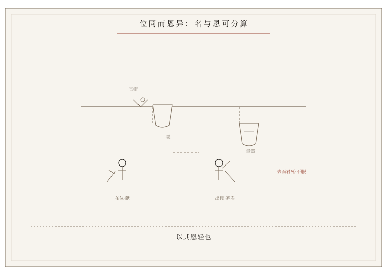

檀弓下 · 四·六十七 · 第 392 课
仕而未有禄者，君有馈焉曰「献」，使焉曰「寡君」。违而君薨，弗为服也。
说什么事：已出仕而未受俸禄的人，有物献给君，称「献」；出使外国，称自己的君为「寡君」。至于离去之后君死，则不为他服丧。
落在哪一层：以「恩」定服。位同而服不同，所异者是恩之轻重。
为何编在此位：上节论「以位自恃」，此节论「位不即等于恩」。一戒恃位，一辨有位未必有恩。
【经】仕而未有禄者，君有馈焉曰「献」，使焉曰「寡君」。违而君薨，弗为服也。
【注】见在臣位，与有禄同也。／以其恩轻也。违，去也。
【疏】此一节论臣之仕未得禄者与得禄之臣有同、有不同之事也。故《王制》云：「位定然后禄之。」是先位定而后禄也。／「君有馈焉曰献」者，馈，饷也。「君有馈」，谓臣有物馈献于君。既奉饷君上，故曰「献」。／「使焉曰寡君」者，「使焉」，谓为君使往他国。此臣若出使，则自称己君为「寡君」也。言臣虽仕未得禄，而有物馈君，及出使他国，所称则并与得禄者同也。嫌其或异，故明之也。／「违而君薨，弗为服也」者，此一条则异也。「违而君薨」者，违，去也，谓三谏不从，以礼去者，若已有禄，恩重者，虽放出仕他国，而所仕者敌，则犹反服。今此未得禄之臣，唯在朝时乃服，若放出他邦，而故君薨，所仕虽敌，亦不反服也，以其本无禄，恩轻故也。
仕 出仕。
未有禄 尚未受俸禄。
馈 馈献，臣以物献君。
献 对上之敬辞。
使焉 出使于他国。
寡君 对他国谦称己君。
违 离去。
薨 诸侯死。
为服 为之服丧。
已出仕而未受俸禄的人，有物献给君，称「献」；为他出使外国，称己君为「寡君」。若他离去之后君死，则不为君服丧。
此章三句。前两句说「同」，后一句说「异」。
同一人，同一君，而在朝与去国，礼判然两事。
第一层 「仕而未有禄」：一个过渡的位 《王制》云「位定然后禄之」——先有位，后有禄。
故「未有禄」是一个真实存在的中间状态：已在臣位，未受臣养。
第二层 前两句之「同」 献称「献」，使称「寡君」，与有禄者同。
此一同，是「位」的同。 注云「见在臣位，与有禄同也」。
礼先认位，后认养。 一个人只要在其位，说话的名分便已具足。
第三层 「违而君薨，弗为服」：一句之异 此为「恩」的不同。
注四字：「以其恩轻也。」
无禄，则无恩；无恩，则不服。 服者，报也。
第四层 有禄者如何 疏云：「若已有禄，恩重者，虽放出仕他国，而所仕者敌，则犹反服。」
有禄之臣，即使去国仕于敌国，故君死仍反服。 因其所受者厚。
第五层 「三谏不从，以礼去者」 疏以此界定「违」：不是逃，是谏而不从、以礼而去。
此一界定极要紧：「违」是礼内之去，不是礼外之叛。 故其不服，不为无礼，只为恩轻。
第六层 此章之分寸 礼于此立了一条极细的线：名分与恩养，可以分开算。
在朝则名分为重，故称献、称寡君；去国则恩养为断，故不服。
今之多以「名分」包办一切者，正失此分。
第七层 与上节对读 上节邑长恃位以免偿，此节未禄者据恩以不服。
一以位为恃，一以恩为断。 礼之两端：位不可恃，恩不可假。
与今日何干 今之挂名不受薪者，多以名分自居；受厚禄而轻去者，又多不以恩自省。
此章给一句：在位则守其名，受养则报其恩。
| 左 | 右 |
|---|---|
| 仕 | 已在臣位 |
| 未有禄 | 未受臣养 |
| 有馈曰献 | 名分同 |
| 使曰寡君 | 名分同 |
| 违而君薨 | 去国之后 |
| 弗为服 | 恩轻 |
| 有禄则反服 | 恩重 |
| 三谏不从以礼去 | 违之界 |
| 名与恩可分算 | 全章之要 |
画一幅简略的室内场景，视点平视。画面上方悬一横木，木上挂着两件东西：左边一只空着的官帽，右边一只盛着粟米的量器，量器中米粒堆起。横木之下立一人形，头戴与左帽同式的冠，双手捧着量器，作上献之状。人形之右侧另立一人形，身形相同，手中空无一物，只持一支出使用的符节。两件悬物之间画一条竖虚线。不画文字。赭色只用在那只量器的口沿。
